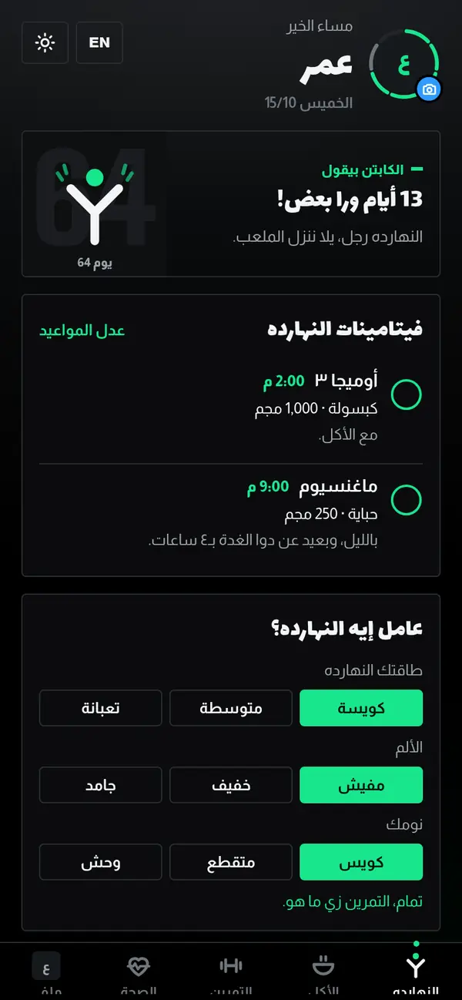
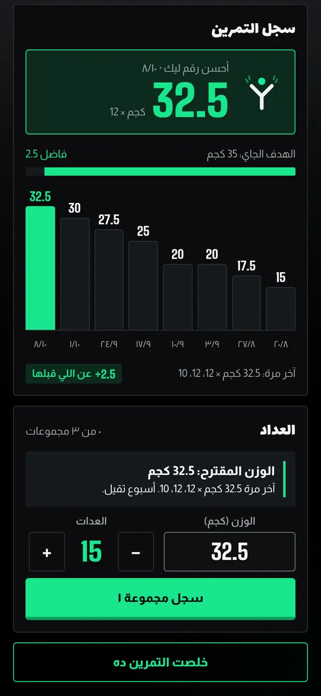
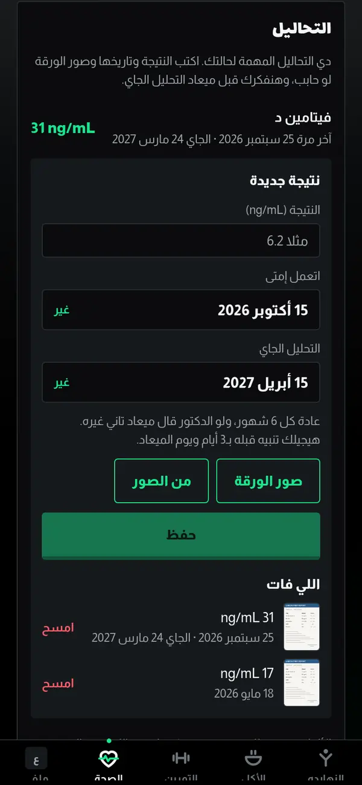
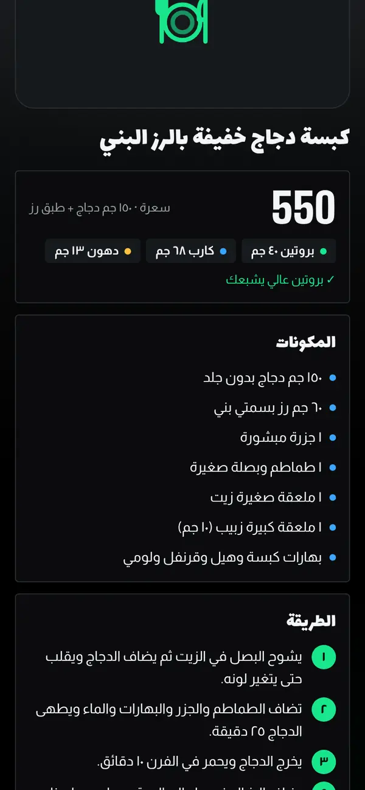
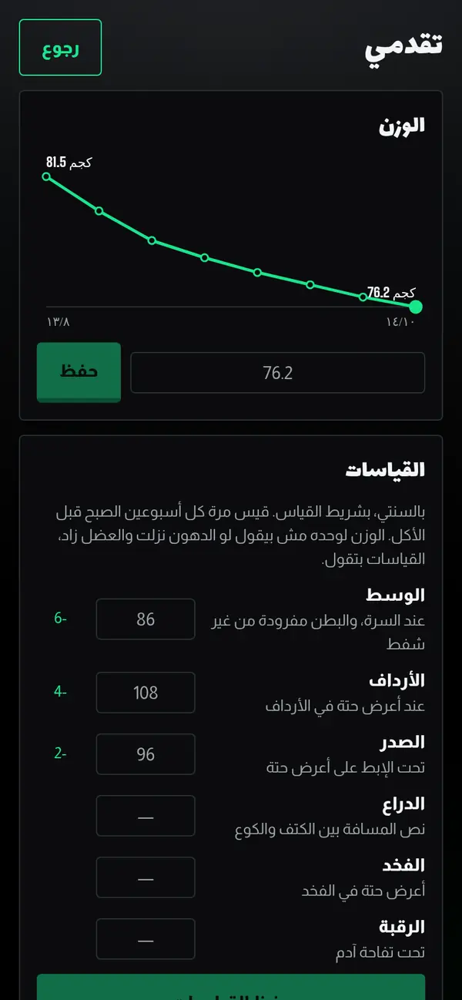
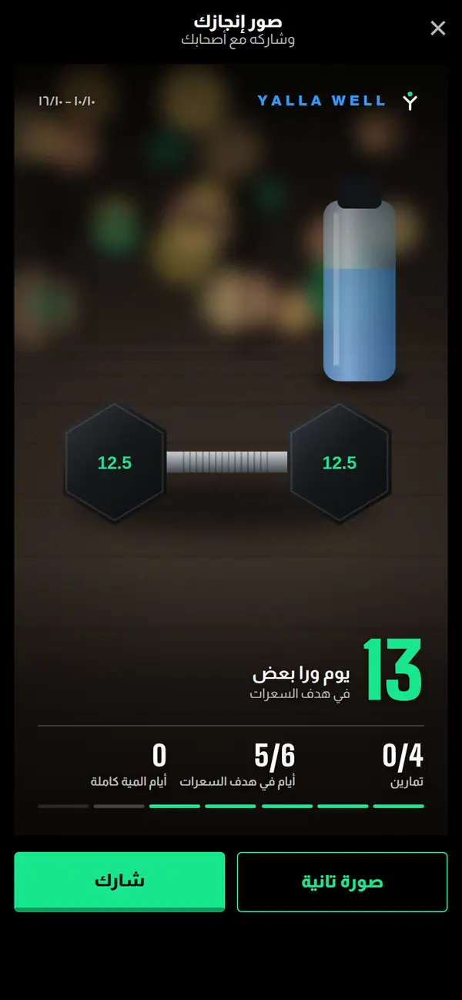

اليوم
يومك في نظرة.
جملة عن يومك، والأدوية والفيتامينات بمواعيدها، وسؤال سريع عن الطاقة والألم والنوم، والأيام المتتالية. والأكل والتمرين والصحة كل واحد في صفحته.
قريبا على آيفون وأندرويد
يلا ويل بيعملك خطة أكل وتمرين على حسب جسمك وهدفك وصحتك، وبنعدلها كل ما حياتك تتغير. أكل متنوع، وتمرين بجد، وأيام راحة، من غير قواعد صعبة ولا ملل.
تطبيق واحد
بدل اشتراك لكل حاجة لوحدها: عداد سعرات، وخطة تمرين، وتطبيق للنوم، وتذكير بالأدوية. هنا كله مربوط ببعضه، والتطبيق فاكر تاريخك سنين لقدام.
الأكل عارف عن التمرين، والتمرين عارف عن النوم والأدوية والتحاليل. ومع الوقت الخطة بتتغير مع سنك وظروفك، بدل البداية من الصفر مع كل تطبيق جديد.
الأكل والتمرين والنوم والدورة والأدوية والتحاليل، كلهم في تطبيق واحد عارف حالتك.
جوه التطبيق
اليوم
جملة عن يومك، والأدوية والفيتامينات بمواعيدها، وسؤال سريع عن الطاقة والألم والنوم، والأيام المتتالية. والأكل والتمرين والصحة كل واحد في صفحته.
التمرين
لما كل التكرارات تكمل، الوزن المقترح بيزيد، والأسابيع بتتبدل بين تقيل وأخف علشان الجسم يرتاح.
سجل التمرين
كل مجموعة بتخلص بتتسجل بوزنها وعداتها، ومعاها أحسن رقم، والهدف الجاي، وعمود لكل جلسة. فايدته: الوزن المناسب للمرة الجاية بيبقى قدامك، والقوة وهي بتزيد بتبان بالأرقام.
الصحة
النوم وعدد ساعاته، والأدوية والفيتامينات بمواعيدها، والتحاليل، وتقرير للدكتور. ولو فيه ظرف زي الحمل أو أيام الدورة، بيتابع هنا كمان.
التحاليل
النتيجة والتاريخ وميعاد التحليل الجاي، مع صورة الورقة نفسها، وتذكير قبل الميعاد.
الوصفات
أكلات من الشام والخليج والمغرب العربي والعراق واليمن ومصر، بنسخة أخف، وبكمية على قد السعرات الباقية.
التقدم
ده غير سجل التمرين: هنا الجسم نفسه. الوزن على رسم بياني، والمقاسات كل أسبوعين، لأن الميزان لوحده مش بيقول كل حاجة. فايدته: الدهون اللي بتنزل بتبان حتى لو الوزن ثابت.
صورة الإنجاز
الدايرة اللي جنب الاسم فيها أيام الأسبوع. بلمسة الكاميرا بتفتح جوه إطار هادي فيه أرقامك الحقيقية: الأيام المتتالية، والتمارين، وأيام الهدف. والصورة جاهزة للمشاركة.






دقة السعرات
سعرة أقل من الحقيقة في الوجبة الواحدة، في اختبار لـ4 تطبيقات تصوير معروفة
أرقام الأكل في يلا ويل محسوبة بالجرام من قاعدة بيانات الأكل الأمريكية
تطبيقات التصوير بتخمن الكمية من الصورة، وكتير بتغلط. إحنا بنحسب أكلك بالجرام من قاعدة بيانات موثوقة.
كل أكلة محسوبة بوزنها من أرقام وزارة الزراعة الأمريكية (USDA FoodData Central)، والمنتجات المغلفة من ملصقها بقراءة الباركود (Open Food Facts).
المصدر: باحثين في المعاهد الوطنية للصحة الأمريكية (NIH) اختبروا 102 وجبة، وعرضوا النتائج في مؤتمر NUTRITION 2026، والدراسة لسه مش منشورة في مجلة محكمة. الخبر
التطبيق بيتابع إيه
بنراعي حالتك الصحية وأدويتك، وكل ظرف ممكن يمر بيه أي حد، زي الإصابات والحمل وأيام الدورة. الخطة بتتعدل معاه.
سعرات وبروتين محسوبين بالوزن، ووصفات بكمية على قد الوجبة، ومن غير الأكل اللي عندك حساسية منه.
في الجيم أو البيت، مع سجل وتقدم كل أسبوع.
كل دواء بجرعته وميعاده، وبنفكرك في كل ميعاد.
النتيجة والتاريخ وصورة الورقة، وتذكير بالتحليل الجاي.
هدف كل يوم على حسب وزنك، وتسجيل بلمسة واحدة.
ميعاد النوم والصحيان، وعدد الساعات مقارنة بالمعدل المناسب لسنك.
إصابة تحت العلاج، أو حمل، أو أيام الدورة: التمرين والأكل بيتعدلوا على حسب الظرف، وبيرجعوا لطبيعتهم لما يخلص.
يلا ويل بيساعد في المتابعة وبيفكرك بالمواعيد، بس مش بيشخص ومش بديل عن الدكتور. ألوان التحاليل دليل تقريبي، والقرار في الدواء أو الأكل أو التمرين للدكتور.
البداية
العمر والطول والوزن والهدف، وأي حالة صحية أو أدوية أو حساسية من أكل، ولو فيه نظام أكل من أخصائي تغذية.
9 أنظمة، أو 3 أسئلة ونقترح بعدها نظام مناسب. وكل يوم في الأسبوع يا جيم يا بيت يا راحة.
السعرات والبروتين والمية وأسبوع التمرين، مع ملاحظة على كل حاجة اتغيرت بسبب حالتك الصحية.
تجربة سريعة
دي أمثلة مبسطة للي بيعمله التطبيق. الخطة الحقيقية بتتبني من كل بياناتك.
الخطة
التطبيق مش بيشخص، والدكتور هو اللي يقرر.
من غير قائمة ممنوعات. الخطة بتتغير كل ما ظروفك تتغير، علشان الأكل الصحي والحركة يبقوا جزء من يومك العادي، ويكملوا كمان بعد الوصول للهدف.
التطبيق جاي قريب على آيفون وأندرويد.
الأسئلة
تطبيق بيعملك خطة أكل وتمرين على حسب جسمك وهدفك وصحتك، وبيفكرك بمواعيد الأدوية والتحاليل. ولو صحتك أو أدويتك اتغيرت، الخطة بتتغير معاها.
لا. يلا ويل بيساعد في التنظيم والمتابعة، ومش بيشخص. والقرار في الدواء أو الأكل أو التمرين بيكون مع الدكتور.
كل أكلة محسوبة بوزنها بالجرام من قاعدة بيانات وزارة الزراعة الأمريكية للأغذية (USDA FoodData Central). والمنتجات المغلفة بتتحسب من ملصقها بقراءة الباركود (Open Food Facts).
قريبا على آيفون وأندرويد. هنعلن على قناة الواتساب والسوشيال ميديا أول ما ينزل.
النسخة الحالية تجريبية ومن غير أي اشتراك.